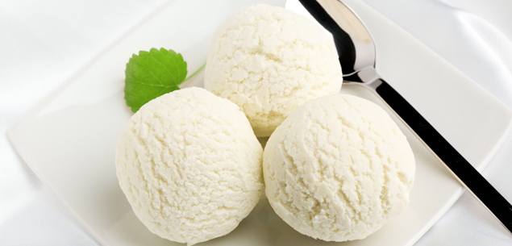
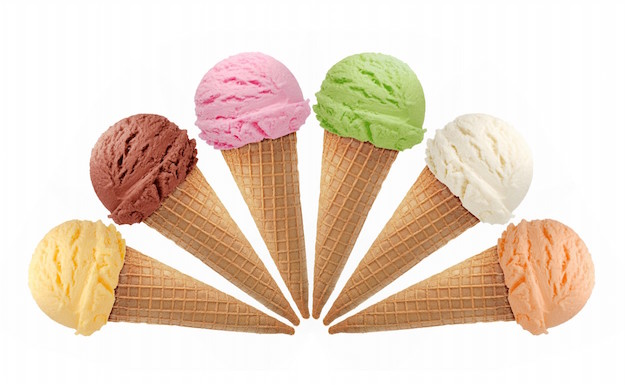

Hello, I just ate my first ice cream sandwich in the school lunch. I had just finished the jello eating contest and the prize was 3 ice cream sandwiches. The bend on the brown and white ice cream melted in our mouth. It opened my eyes to one of the best type of foods; ice cream
So Many Flavors!
There are so many flavors to choose from. You can go with the classic flavors; vanilla or chocolate. Just like me, I am a vanilla guy. I do not like chocolate so I despised flavors like chocolate mint chip or cookie dough with chocolate bits. Other great flavors are coconut or mango ice cream. These are the more bear but equally as tasteful flavors.

Ice cream is every where!
I also love that ice cream is a world wide thing. Each country adds their own twist to ice cream. In Japan they have things called Mochi which has a sticky rice texture on the outside and ice-cream filling inside. In Italy they have gelato. It is more dense and milkier than normal ice cream and is more flavorful. This shows the world renown ice cream served in many different ways showing how versatile it is. To read more about ice cream every where around the world come check here Check out this Youtube video on ice cream! Watch this crazy ice cream vendor and his trickes here!
Love Ice Cream!
Ice cream is known throughout the world for bringing happiness . I know everyday that if I had a bad day I could just eat some ice cream to make it better. Whats better than seeing a kid jumping up and down as they can’t wait to get their ice cream? It is happiness at it’s purest form. Not only is ice cream one of the most tastiest things on earth it brings everyone happiness around the world. Also check out a ice cream twitter here.

Love Ice Cream! pt2
Dessert is the best and most wonderful part of a meal! Never have I met anyone who does not like dessert best. The best dessert is ice cream because it tastes delicious, is liked by almost everyone, and it reminds us of our happy childhood. Ice cream tastes better than any other food;What food can rival its creamy smoothness, or the delicious feeling of this soft, cold dessert? I don’t know of any other food is so mouth-watering and it even comes in hundreds of flavours. If you think ice cream is not good for you then you can even get ice cream with protein in it, as the soy ice creams have. Ice cream is really good. It my even be its own complete meal! Ice cream is a wonderfull tasting dessert food that is known universally. It is the perfect made dessert and is available in so many flavours.